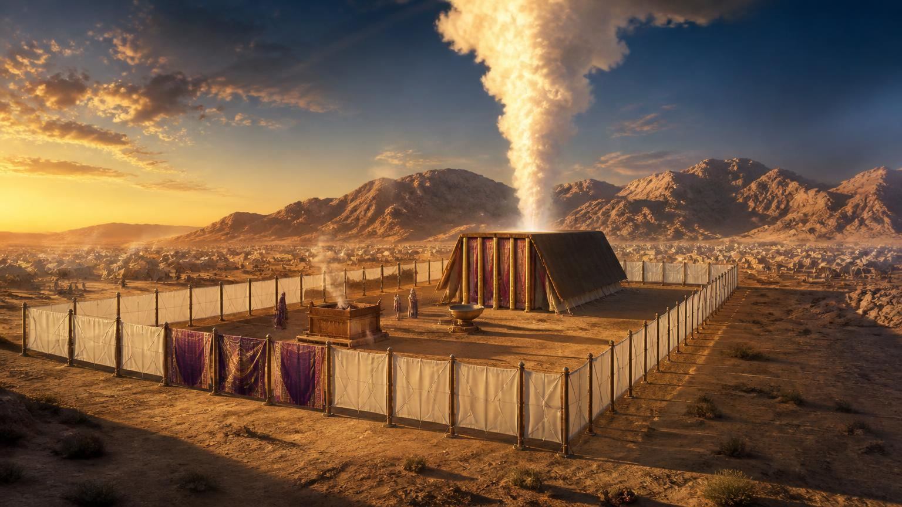
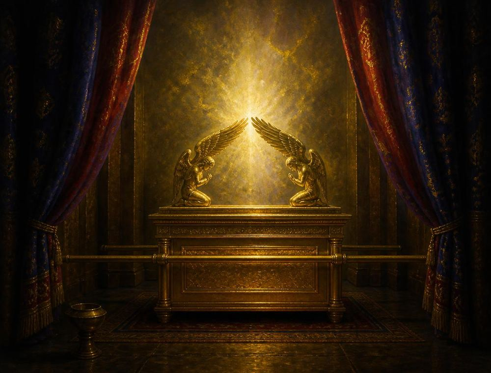
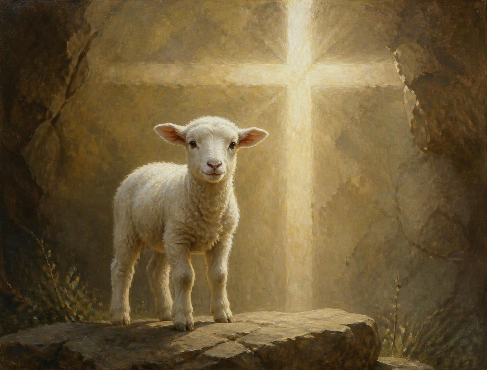
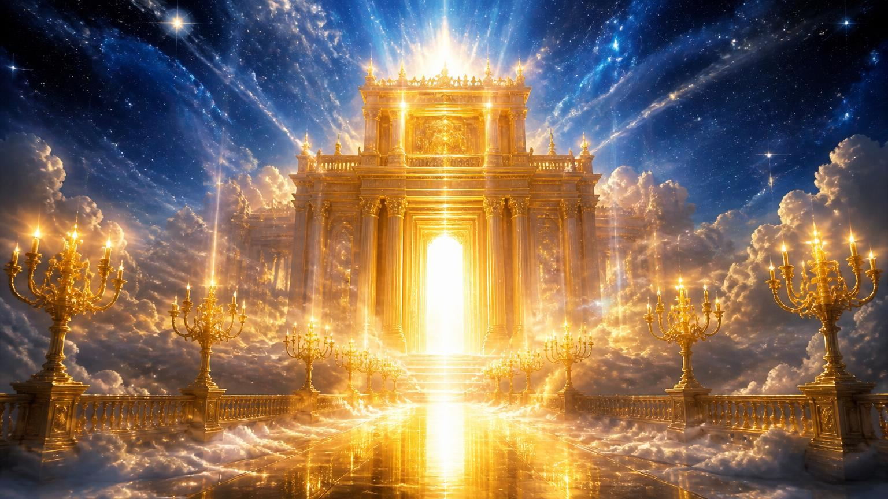

Uma tenda no deserto, um Cordeiro numa cruz e um Sumo Sacerdote vivo diante do trono de Deus.
O ponto de partida
Ainda no Sinai, Deus deu a Moisés uma ordem clara: construir um santuário para que Ele pudesse habitar entre o Seu povo. O projeto não nasceu da criatividade humana — Moisés recebeu um modelo (em hebraico tabnith, “padrão”, “planta”) que lhe foi mostrado no monte, e deveria segui-lo em cada detalhe.
O que Moisés viu foi uma representação do santuário celestial, o verdadeiro tabernáculo. Por isso o autor de Hebreus afirma que Cristo não entrou “num santuário feito por mãos, figura do verdadeiro, porém no mesmo céu, para agora comparecer por nós diante da face de Deus” (Hebreus 9:24).
Assim, o tabernáculo do deserto — e depois o templo de Salomão — foram maquetes vivas: uma lição objetiva do plano da salvação, ensinada em madeira, ouro, linho e sangue, séculos antes de Jesus nascer em Belém.

Altar do holocausto (o sacrifício, a cruz) e a pia de bronze (o batismo e a purificação diária).
Candelabro de sete braços (Jesus, a luz do mundo, e o Espírito Santo), mesa dos pães da proposição (Cristo, o Pão da Vida e a Palavra) e altar de incenso (as orações dos santos misturadas aos méritos de Cristo).
Arca da aliança com a Lei, o propiciatório e a presença da Shekiná. Só o sumo sacerdote entrava, uma vez por ano, no Dia da Expiação.

Como Jesus foi identificado na Terra
Quando João Batista viu Jesus se aproximando do Jordão, não O chamou de rei, general ou filósofo. Ele usou a linguagem do santuário: “Eis o Cordeiro de Deus, que tira o pecado do mundo” (João 1:29). Todo israelita entendia — o cordeiro era o animal levado ao altar, inocente, que morria no lugar do pecador.
Séculos antes, Isaías já havia descrito esse mesmo Cordeiro: “Certamente Ele tomou sobre Si as nossas enfermidades… Ele foi traspassado pelas nossas transgressões… e o Senhor fez cair sobre Ele a iniquidade de nós todos… como um cordeiro foi levado ao matadouro” (Isaías 53:4-7).
Jesus é, ao mesmo tempo, a vítima e o sacerdote: Ele ofereceu a Si mesmo, uma única vez, um sacrifício perfeito e suficiente para sempre (Hebreus 9:26-28). Por isso o Novo Testamento nunca pede que repitamos sacrifícios — o cordeiro do altar já cumpriu seu papel na cruz.
João 1:29, 36 · 1 Pedro 1:18-19 · Apocalipse 5:6
Inocente, sem defeito, morto no lugar do culpado.
Isaías 53:4-7
Carrega dores, culpa e castigo que eram nossos, em silêncio e por amor.
1 Timóteo 2:5 · Hebreus 7:25
Homem e Deus, capaz de tocar as duas partes e reconciliá-las.
Requisito central
Depois de morrer, ressuscitar e ascender, Jesus não “se aposentou”. Hebreus responde de forma direta: Ele é o nosso Sumo Sacerdote em atividade.
Apresenta ao Pai os méritos do Seu sangue e vive para interceder pelos que por Ele se chegam a Deus (Hebreus 7:25; Romanos 8:34).
Confessando os pecados, Ele é fiel e justo para perdoar e purificar de toda injustiça (1 João 1:9; 2:1).
Foi tentado em tudo, mas sem pecado; por isso podemos chegar “com confiança ao trono da graça” (Hebreus 4:14-16).
Do santuário celestial Ele derrama poder e dons sobre a igreja (Atos 2:33; João 16:7).
Desde 1844, no antitípico Dia da Expiação, atua na obra final de purificação do santuário e de vindicação do Seu povo (Daniel 8:14; Apocalipse 14:6-7).
“Vou preparar-vos lugar… voltarei e vos receberei para Mim mesmo” (João 14:1-3).
Sombra e realidade
O serviço levítico era “sombra dos bens futuros” (Hebreus 10:1). Cada gesto do sacerdote apontava para algo que Jesus faria de verdade. Compare:
| No santuário terrestre | No santuário celestial | Texto |
|---|---|---|
| Cordeiro sem defeito era sacrificado no átrio | Cristo Se ofereceu uma única vez na cruz, sacrifício perfeito e definitivo | Hb 9:12, 26-28 |
| Sacerdote aplicava o sangue e o pecador era perdoado | O sangue de Cristo purifica a consciência de obras mortas | Hb 9:13-14 |
| Sacerdote acendia o candelabro e trocava os pães | Jesus sustenta a igreja com luz e com a Palavra | Ap 1:12-13, 20 |
| Incenso subia no altar de ouro pela manhã e à tarde | Jesus apresenta nossas orações perfumadas por Seus méritos | Ap 8:3-4 |
| Dia da Expiação: dois bodes, um para o Senhor, outro para Azazel (Lv 16:9,15) | Juízo final e purificação; o pecado é finalmente colocado sobre Satanás, seu autor | Lv 16 · Ap 20 |
| Sumo sacerdote entrava no Santíssimo uma vez ao ano | Cristo entrou no céu de uma vez por todas, com o próprio sangue | Hb 9:7, 12 |
| Sacerdotes morriam e eram substituídos | Cristo vive para sempre e tem sacerdócio imutável | Hb 7:23-25 |

A ordem dos acontecimentos
Do Calvário à eternidade: os principais eventos do ministério de Cristo em favor do ser humano, na ordem em que acontecem.
“Cristo morreu pelos nossos pecados, segundo as Escrituras.” O preço foi pago no Calvário.
1 Coríntios 15:3
“Cristo, ressuscitado dentre os mortos, já não morre; a morte já não tem domínio sobre Ele.”
Romanos 6:9 · 1 Coríntios 15:4
Jesus sobe ao céu e começa Seu ministério no santuário celestial, à direita do Pai.
Atos 1:9-11 · Hebreus 8:1-2
“Há um só Deus e um só Mediador entre Deus e os homens: Cristo Jesus, homem.” É o que Ele faz por nós hoje.
1 Timóteo 2:5 · Hebreus 7:25
Fase final do ministério de Cristo antes da volta: os registros são examinados e a graça é vindicada diante do universo. Nada disso nos assusta — nosso Advogado é o próprio Juiz que morreu por nós.
Daniel 7:9-10; 8:14 · Apocalipse 14:7
“O Senhor descerá do céu… e os que morreram em Cristo ressuscitarão primeiro”, e os vivos serão arrebatados para encontrá-Lo nos ares.
1 Tessalonicenses 4:16-17 · João 14:1-3
“E todas as nações serão reunidas diante Dele, e Ele separará uns dos outros, como o pastor separa as ovelhas dos bodes.”
Mateus 25:31-32
Livros abertos, cada um julgado segundo as suas obras; a morte e o inferno são lançados no lago de fogo. Depois: novos céus, nova terra — e Deus habitando com Seu povo, o que o santuário sempre prometeu.
Apocalipse 20:12-15 · Apocalipse 21:3
Texto para memorizar e recitar
“Porque há um só Deus e um só Mediador entre Deus e os homens: Jesus Cristo, homem.”
1 Timóteo 2:5
Dica para decorar: divida em três blocos — “um só Deus” · “um só Mediador” · “Jesus Cristo, homem”. Repita em voz alta cinco vezes, depois escreva de memória. Esse versículo é o coração da especialidade: ninguém mais — santo, anjo ou sacerdote humano — pode ocupar o lugar de Jesus entre nós e o Pai.
Requisito prático
Use este roteirinho simples de três minutos.
“Você sabe o que Jesus está fazendo agora, neste momento?” A maioria só pensa na cruz — e a história continua.
Ele está vivo, no santuário celestial, como nosso Sumo Sacerdote: intercede, perdoa e entende nossas fraquezas porque também foi tentado (Hebreus 4:14-16).
Quando essa obra terminar, Ele volta para nos buscar. Convide seu amigo a orar com você — é o jeito mais direto de usar o “trono da graça”.
Para saber mais
Cerca de 50 capítulos da Bíblia tratam do santuário e seus serviços. Êxodo dedica 13 capítulos ao tabernáculo — mais do que à criação do mundo.
O tabernáculo media aproximadamente 13,5 m por 4,5 m e era montado e desmontado pelos levitas a cada deslocamento do acampamento no deserto.
Azul (a Lei e o céu), púrpura (realeza), escarlate (o sangue do sacrifício) e linho branco (a justiça de Cristo) apareciam nas cortinas e nas vestes sacerdotais.
Quando Jesus morreu, o véu do templo se rasgou de alto a baixo (Mateus 27:51): o serviço típico havia terminado, porque o verdadeiro Cordeiro tinha sido oferecido.
O estudo de Daniel 8:14 (“até 2.300 tardes e manhãs; então o santuário será purificado”) levou os pioneiros adventistas a compreender o ministério de Cristo no Santíssimo celestial — tema que está na crença fundamental nº 24 da Igreja Adventista do Sétimo Dia.
Ellen G. White escreveu que “o assunto do santuário foi a chave que desvendou o mistério do desapontamento” e revelou “um completo sistema de verdade” (O Grande Conflito, cap. 23).